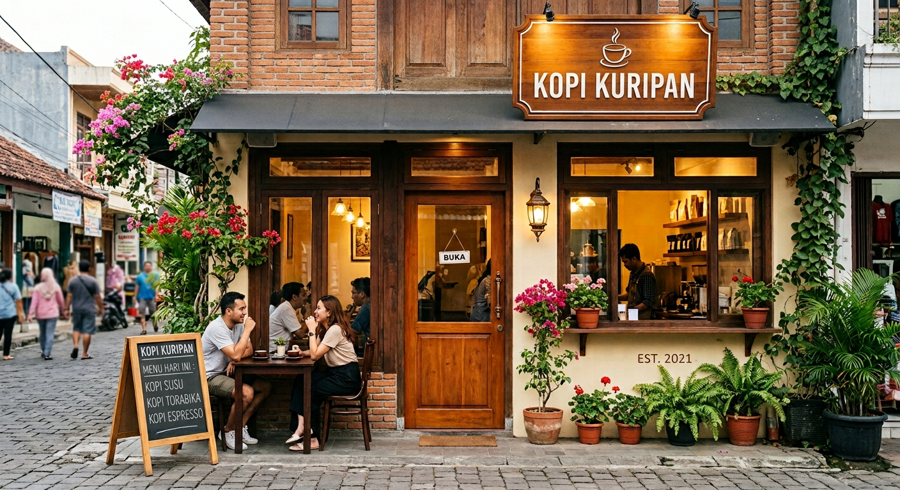
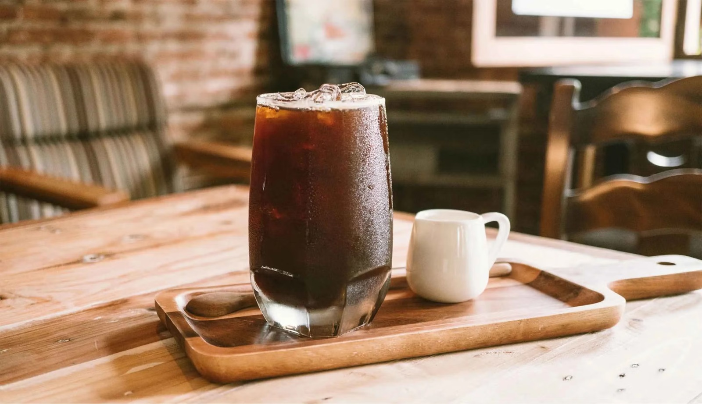
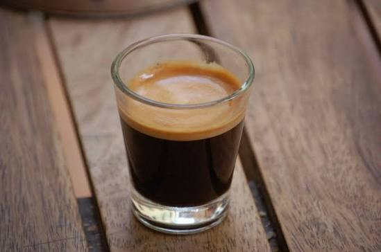

Kopi Susu
Minuman perpaduan espresso dan susu yang menghasilkan rasa seimbang antara pahit kopi dan creamy susu, cocok dinikmati kapan saja.
Rp20.000
UMKM Pekalongan
Menyajikan kopi rempah khas Pekalongan dan racikan kopi susu kekinian untuk menemani tugas kuliahmu.

Minuman perpaduan espresso dan susu yang menghasilkan rasa seimbang antara pahit kopi dan creamy susu, cocok dinikmati kapan saja.
Rp20.000

Sajian kopi hitam klasik dengan karakter rasa mantap, aroma pekat, dan tingkat kepahitan yang seimbang.
Rp15.000

Kopi dengan rasa yang kuat, pekat, dan aroma khas, cocok bagi pecinta kopi dengan cita rasa intens.
Rp25.000
Alamat: Kuripan Lor, Kecamatan Pekalongan Selatan, Kota Pekalongan
Jam Operasional: 08.00 – 22.00 WIB
Layanan Pelanggan: Hubungi via WhatsApp